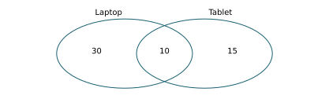
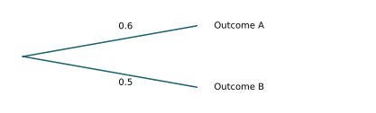
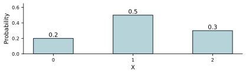
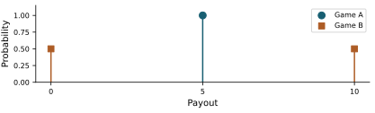

Teaching / Test banks and answer keys
Unit 2: Probability and discrete models Chapters 3-4 · 100 questions · Four-function calculator allowed
Choose one answer. Reveal feedback after trying the question. All numerical scenarios are illustrative. The full bank and explanations are available for study; Chapter 9 is not tested.
Download printable PDF with answer key
Skill group All ten groups Events, complements, and probability claims Independence, dependence, and conditions Probability rules and shortcuts Tables, trees, and Venn reasoning Discrete distributions and support Expected value, costs, and spread Binomial reasoning Geometric reasoning Hypergeometric and sampling design Poisson counts and model comparisons Reveal all answers 100 questions
U2-G01: Events, complements, and probability claims
U2-001. A spinner has three colors occupying half, one quarter, and one quarter of its area. Why is assigning each color probability 1/3 inappropriate? Every color must have probability 1/2. Probabilities must be whole numbers. The color areas are unequal. A spinner cannot have three outcomes. Slides 3.1, page 5: Unequal probabilities · evaluate
Reveal answer and explanation C. The color areas are unequal.
Equally likely colors require equal chance, not merely three category names.
U2-002. A fair six-sided die is rolled. What is the probability of a result greater than 4? 1/6. 4/6. 2/6. 5/6. Slides 3.1, page 4: Equally likely outcomes · calculate
Reveal answer and explanation C. 2/6.
Only 5 and 6 satisfy the event among six equally likely outcomes.
U2-003. A fair coin gives 8 heads in 10 tosses. What follows? The coin's future head probability is now 0.8. Fairness requires exactly 5 heads in every ten tosses. Such a short-run imbalance can occur with a fair coin. The next two tosses must be tails. Slides 3.1, page 8: Law of large numbers · evaluate
Reveal answer and explanation C. Such a short-run imbalance can occur with a fair coin.
Long-run probability does not impose exact counts in short sequences.
U2-004. A service meets its deadline with probability 0.80. What is the probability of missing it? 0.80. 0.40. 1.80. 0.20. Slides 3.1, page 9: A complement · calculate
Reveal answer and explanation D. 0.20.
The complement has probability 1-0.80.
U2-005. An event is described as drawing a heart or a king. Does the king of hearts qualify? Only if the card is drawn twice. No; OR always excludes overlap. Only if hearts and kings are independent. Yes; the statistical OR includes the overlap. Slides 3.1, page 13: Inclusive “or” · interpret
Reveal answer and explanation D. Yes; the statistical OR includes the overlap.
Inclusive OR includes outcomes satisfying either or both conditions.
U2-006. On a die, A is even and B is greater than 3. Which results satisfy both? 2, 4, 5, 6. 4 and 6. 5 only. 2 only. Slides 3.1, page 11: The intersection · interpret
Reveal answer and explanation B. 4 and 6.
The intersection contains results meeting both conditions.
U2-007. On a die, A is even and B is greater than 3. Which results satisfy at least one condition? All six results. 1, 3 only. 4, 6 only. 2, 4, 5, 6. Slides 3.1, page 12: The union · interpret
Reveal answer and explanation D. 2, 4, 5, 6.
The union includes all outcomes in either event, counting overlaps once.
U2-008. X counts the successes. Which values satisfy fewer than 3 successes? 0, 1, 2, 3. 3 and above. 0, 1, 2. 1, 2, 3 only. Slides 3.1, page 19: Write a probability event · interpret
Reveal answer and explanation C. 0, 1, 2.
Fewer than is a strict inequality and excludes 3.
U2-009. Among 200 recorded jobs, 30 were late. What does 30/200 describe? The number of late jobs that must occur tomorrow. A guarantee that the next job is late. The exact long-run probability under every possible condition. The observed late-job relative frequency. Slides 3.1, page 7: Relative frequency · interpret
Reveal answer and explanation D. The observed late-job relative frequency.
An empirical frequency summarizes observations and can estimate a probability.
U2-010. A proposed event probability is 1.15. What is wrong? Probabilities must always equal 0.5. All probabilities must be integers. A probability cannot exceed 1. Only complements may exceed 1. Slides 3.1, page 6: Probability bounds · evaluate
Reveal answer and explanation C. A probability cannot exceed 1.
Probability measures a fraction of total chance and lies between 0 and 1.
U2-G02: Independence, dependence, and conditions
U2-011. An independent fair coin has just produced five tails. What is the chance of heads next? Greater than 1/2 because heads is due. 1. 1/2. Less than 1/2 because tails is favored. Slides 3.2, page 19: Coin tosses and “due” outcomes · predict
Reveal answer and explanation C. 1/2.
Past independent outcomes do not change the next toss probability.
U2-012. P(A)=0.30 and P(A given B)=0.30, with P(B)>0. What does this support? B guarantees A. A is impossible. A and B are mutually exclusive. A and B are independent. Slides 3.2, page 15: A conditional check · evaluate
Reveal answer and explanation D. A and B are independent.
Conditioning on B does not change the probability of A.
U2-013. A late-job rate is 10% overall but 30% during storms. What does storm information do? It changes the estimated chance of lateness. It establishes that every storm job is late. It makes lateness impossible outside storms. It proves the events are independent. Slides 3.2, page 3: Dependence · interpret
Reveal answer and explanation A. It changes the estimated chance of lateness.
Different conditional and overall rates indicate dependence in this model.
U2-014. Two mutually exclusive events each have positive probability. Can they be independent? Yes; both have positive probabilities. No; one occurring makes the other impossible. Yes; disjoint always means independent. Only if their probabilities add to 1. Slides 3.2, page 11: Disjoint or independent? · evaluate
Reveal answer and explanation B. No; one occurring makes the other impossible.
For positive-probability disjoint events, the intersection is zero but the product is positive.
U2-015. Tokens are replaced and mixed after each draw. Compared with leaving them out, what does replacement preserve? A guarantee that colors alternate. A decreasing total number of tokens. The same token being selected every time. The original color probabilities on each independent draw. Slides 3.2, page 12: With replacement · compare
Reveal answer and explanation D. The original color probabilities on each independent draw.
Replacement restores the composition before the next randomized draw.
U2-016. A box has 3 red and 2 blue tokens. After a red token is drawn and not replaced, what happens to the red chance on the next draw? It falls from 3/5 to 2/4. It rises from 3/5 to 3/4. It stays 3/5. It becomes zero. Slides 3.2, page 13: Without replacement · predict
Reveal answer and explanation A. It falls from 3/5 to 2/4.
Removing red reduces the red share of the remaining box.
U2-017. Two servers share one power supply. Why might independent failure events be a poor model? A power failure can affect both servers together. Failure probabilities must sum to 1. Shared equipment guarantees no failures. Different server names prove independence. Slides 3.2, page 17: An independence model · evaluate
Reveal answer and explanation A. A power failure can affect both servers together.
A shared influence can create dependence.
U2-018. P(A)=0.4, P(B)=0.5, and P(A AND B)=0.2. Which check supports independence? The intersection is positive. 0.5 minus 0.4 equals 0.1. 0.4 times 0.5 equals 0.2. 0.4 plus 0.5 equals 0.9. Slides 3.2, page 2: Test independence · calculate
Reveal answer and explanation C. 0.4 times 0.5 equals 0.2.
Independence requires the joint probability to equal the product.
U2-019. 20 students use both devices; 40 use tablets and 80 use laptops. Which conditional probability is larger? Tablet use given laptop use. They must be equal. Laptop use given tablet use. Neither can use the overlap count. Slides 3.1, page 17: Reverse the condition · compare
Reveal answer and explanation C. Laptop use given tablet use.
The fractions are 20/40 versus 20/80, with different conditioning denominators.
U2-020. A fair die is rolled. A means even; B means 6. Why are these events dependent? Knowing B guarantees A, changing its probability. They cannot happen together. A fair die makes all events independent. Both are separate die rolls. Slides 3.2, page 20: Trials versus events · evaluate
Reveal answer and explanation A. Knowing B guarantees A, changing its probability.
Fair outcomes within one roll do not imply independent events on that roll.
U2-G03: Probability rules and shortcuts
U2-021. 40 students use laptops, 25 use tablets, and 10 use both. Why subtract 10 when counting either device? 
Adding the first two counts includes the overlap twice. Subtraction is required because the sample is random. Both-device users must be excluded entirely. The overlap does not use either device. Slides 3.3, page 2: Why subtract the overlap? · interpret
Reveal answer and explanation A. Adding the first two counts includes the overlap twice.
Subtracting one copy of the overlap counts each person once.
U2-022. P(A)=0.4, P(B)=0.5, and their overlap is 0.2. What is P(A OR B)? 0.7. 1.1. 0.9. 0.2. Slides 3.3, page 1: The addition rule · calculate
Reveal answer and explanation A. 0.7.
Add the two probabilities and subtract the overlap.
U2-023. P(A OR B)=0.75. What is the probability of neither? 0.25. 1.75. 0.75. 0.50. Slides 3.3, page 6: Complement of a union · calculate
Reveal answer and explanation A. 0.25.
Neither is the complement of the union.
U2-024. To find the probability of A followed by B when the stages may be dependent, which expression fits? P(A) plus P(B). P(A) times P(B given A). P(A) minus P(B given A). P(A) times P(B) without checking independence. Slides 3.3, page 8: The multiplication rule · interpret
Reveal answer and explanation B. P(A) times P(B given A).
The general multiplication rule uses the appropriate conditional probability.
U2-025. Which event is the complement of at least one failure in three trials? No failures. At least two failures. Exactly one failure. All three failures. Slides 3.3, page 13: At least one · evaluate
Reveal answer and explanation A. No failures.
The only way to avoid any failure is to have none.
U2-026. For two trials with positive chance of two failures, how do exactly one failure and at least one failure compare? Exactly one has greater probability. The two events are complements. At least one has greater probability. They must be equal. Slides 3.3, page 14: Exactly one · compare
Reveal answer and explanation C. At least one has greater probability.
At least one includes both exactly one and two failures.
U2-027. Given A, the chance of B is 0.7. What is the chance of not B given A? 0.3. Cannot be found unless A is independent of B. 0.7. 1.7. Slides 3.3, page 16: A conditional complement · calculate
Reveal answer and explanation A. 0.3.
The complementary outcomes are evaluated within the same conditioned group.
U2-028. A conditioning event has probability zero. What happens to the usual conditional-probability ratio? Its denominator is zero, so this ratio is undefined. The ratio automatically equals 1. The ratio automatically equals 0.5. Zero divided by zero equals zero. Slides 3.3, page 17: A zero denominator · evaluate
Reveal answer and explanation A. Its denominator is zero, so this ratio is undefined.
The elementary conditional ratio requires a positive-probability conditioning event.
U2-029. P(A)=0.2 but P(A AND B)=0.3. Why is this impossible? A probability cannot be below 0.5. The overlap cannot exceed the probability of A. The overlap must always equal zero. B must have probability 1. Slides 3.3, page 20: Check coherence · evaluate
Reveal answer and explanation B. The overlap cannot exceed the probability of A.
The intersection is a subset of A and cannot be more probable than A.
U2-030. Independent tasks each succeed with probability 0.9. Which shortcut gives at least one failure among three tasks? 0.9 plus 0.9 plus 0.9. The probability all three fail. 1 minus the probability all three succeed. 1 minus the probability exactly one succeeds. Slides 3.3, page 22: A complement shortcut · interpret
Reveal answer and explanation C. 1 minus the probability all three succeed.
At least one failure complements all successes.
U2-G04: Tables, trees, and Venn reasoning
U2-031. Among 20 tablet users, 12 also use laptops. What is P(laptop given tablet) in this sample? 12/20. 20/12. 8/20. 12 divided by all college students. Slides 3.4, page 8: Condition on a row · calculate
Reveal answer and explanation A. 12/20.
Conditioning restricts the denominator to tablet users.
U2-032. To find P(tablet given laptop) from a table, which denominator is needed? Only the number using both. The number of laptop users. Only the number using neither. The number of tablet users. Slides 3.4, page 9: Condition on a column · interpret
Reveal answer and explanation B. The number of laptop users.
The group after given supplies the denominator.
U2-033. Half of tablet users use laptops, and half of non-tablet users use laptops. What does this suggest in these data? Laptop use does not depend on tablet-use status. Every student uses both devices. The events are mutually exclusive. Every student uses exactly one device. Slides 3.4, page 11: An independence check · compare
Reveal answer and explanation A. Laptop use does not depend on tablet-use status.
Equal conditional rates across the groups support independence in the empirical table.
U2-034. A table contains 5 students using both devices. What does this show about mutual exclusivity? The two use events are not mutually exclusive. They are mutually exclusive. They must be independent. Neither event has positive probability. Slides 3.4, page 12: Mutual exclusivity check · evaluate
Reveal answer and explanation A. The two use events are not mutually exclusive.
An observed overlap rules out disjointness in the table.
U2-035. Device-use events appear independent in one class's table. What conclusion needs caution? The table records that class. Their rates match within the observed table. The comparison used conditional rates. They are independent for all students at the college. Slides 3.4, page 18: Scope of the table · evaluate
Reveal answer and explanation D. They are independent for all students at the college.
A class sample does not automatically establish a population-wide relationship.
U2-036. At a tree node, two exhaustive outgoing branch probabilities are 0.6 and 0.5. What is wrong? 
They should both be zero. They total more than 1. Branches cannot represent conditional probabilities. All tree branches must be 0.5. Slides 3.5, page 7: Branch totals · evaluate
Reveal answer and explanation B. They total more than 1.
Exhaustive alternative branches at a node must sum to 1.
U2-037. A first branch has probability 0.4; its next conditional branch is 0.5. What is the path probability? 0.1. 0.2. 0.8. 0.9. Slides 3.5, page 3: Multiply along a path · calculate
Reveal answer and explanation B. 0.2.
Multiply probabilities along a path.
U2-038. Two distinct terminal paths describe exactly one head in two tosses. How is their combined probability found? Subtract the smaller from the larger. Add the two path probabilities. Multiply the two path probabilities. Ignore one because both describe one head. Slides 3.5, page 4: Add terminal paths · interpret
Reveal answer and explanation B. Add the two path probabilities.
Distinct terminal outcomes are disjoint, so their probabilities add.
U2-039. A Venn summary has 30 in A, including 8 in both A and B. How many are in A only? 30. 22. 38. 8. Slides 3.5, page 15: Only one category · calculate
Reveal answer and explanation B. 22.
Remove the overlap from the total in A.
U2-040. Which Venn region is the complement of A OR B? Inside A only. Outside both circles. Every region inside either circle. Only the overlap. Slides 3.5, page 18: Shade a complement · interpret
Reveal answer and explanation B. Outside both circles.
The union includes both circles; its complement is outside both.
U2-G05: Discrete distributions and support
U2-041. X counts heads in three independent fair-coin tosses. Are 0, 1, 2, and 3 heads equally likely? Yes; there are four possible counts. No; 1 and 2 each occur through more sequences. Yes; every fair-coin count is equally likely. No; 0 is impossible. Slides 4.1, page 8: Equal values, unequal chances · evaluate
Reveal answer and explanation B. No; 1 and 2 each occur through more sequences.
Equal chance of individual sequences does not mean equal chance of aggregated counts.
U2-042. A proposed table gives probabilities 0.2, 0.5, 0.3 for X=0,1,2. Is it valid? No; entries must all be equal. No; X cannot include zero. No; one entry exceeds 0.25. Yes; entries are nonnegative and total 1. Slides 4.1, page 10: Probability requirements · evaluate
Reveal answer and explanation D. Yes; entries are nonnegative and total 1.
These are the requirements for a discrete probability distribution.
U2-043. A distribution gives P(X=0)=0.2 and P(X=1)=0.5, with only X=0,1,2 possible. What is P(X=2)? 0.7. 0.3. 0.5. 1.3. Slides 4.1, page 11: A missing probability · calculate
Reveal answer and explanation B. 0.3.
The missing probability makes the total equal to 1.
U2-044. A probability table totals 1 but contains one entry of -0.1. What follows? It is valid if the mean is positive. It is invalid because probabilities cannot be negative. It is valid because only the total matters. Negative probabilities simply indicate rare events. Slides 4.1, page 12: An invalid distribution · evaluate
Reveal answer and explanation B. It is invalid because probabilities cannot be negative.
Both nonnegativity and total 1 are required.
U2-045. X=0,1,2 has probabilities 0.2,0.5,0.3. What is P(X<2)? 
0.7. 1. 0.3. 0.5. Slides 4.1, page 14: Fewer than two · calculate
Reveal answer and explanation A. 0.7.
The event includes only 0 and 1.
U2-046. Which expression computes P(X>0) for a nonnegative count X? The mean of X. 1-P(X=0). P(X=0). 1-P(X=1). Slides 4.1, page 16: A complement · interpret
Reveal answer and explanation B. 1-P(X=0).
Positive counts complement zero when negative counts are impossible.
U2-047. Which quantity naturally has discrete possible values? An unrounded measured length. An unrounded file-transfer duration. The exact mass of a package. The number of failed files. Slides 4.1, page 4: Discrete versus continuous · compare
Reveal answer and explanation D. The number of failed files.
Counts take separated integer values, unlike continuous measurements.
U2-048. A model allows counts 0,1,2,... without a finite upper limit. Can it still be discrete? Only if every count has equal probability. No; a count must stop at 10. Yes; countably many separated values can be discrete. No; all infinite possibilities are continuous. Slides 4.1, page 5: Discrete random variable · evaluate
Reveal answer and explanation C. Yes; countably many separated values can be discrete.
Discrete support can be infinite without forming a continuum.
U2-049. A model assigns a 5% chance to 4 failures. One session has 4 failures. What follows? All future sessions must have 4 failures. The observation is uncommon but consistent with the model. The model is disproved by this one allowed outcome. Its probability must now be 100%. Slides 4.1, page 19: Distribution versus one observation · evaluate
Reveal answer and explanation B. The observation is uncommon but consistent with the model.
An event with positive probability can occur, even if uncommon.
U2-050. In many sessions, 20% have no failures. How might this inform a model? Declare zero failures impossible. Set every count probability to 0.20. Use 0.20 as an empirical estimate for P(X=0). Infer that every fifth session must have no failures. Slides 4.1, page 18: From data to a model · interpret
Reveal answer and explanation C. Use 0.20 as an empirical estimate for P(X=0).
Relative frequencies can estimate a distribution without imposing a fixed order.
U2-G06: Expected value, costs, and spread
U2-051. A count variable has expected value 0.4. What does that mean? Its long-run average can be 0.4 despite integer observations. The model is invalid. Exactly 40% of sessions must contain one event. A single session must contain 0.4 events. Slides 4.2, page 4: A mean between integers · interpret
Reveal answer and explanation A. Its long-run average can be 0.4 despite integer observations.
An expectation is an average, not necessarily a possible individual value.
U2-052. Outcomes 0 and 10 have probabilities 0.9 and 0.1. Why is their expected value not 5? The larger value is impossible. The values cannot be averaged. Expected value always equals the most likely outcome. The outcomes require unequal probability weights. Slides 4.2, page 3: Not an unweighted average · evaluate
Reveal answer and explanation D. The outcomes require unequal probability weights.
The weighted mean is 1, not the unweighted midpoint.
U2-053. Probability is shifted from a low outcome to a higher outcome, with other probabilities unchanged. What happens to expected value? It cannot change. It increases. It must become the largest outcome. It decreases. Slides 4.2, page 2: The weighted mean formula · predict
Reveal answer and explanation B. It increases.
Giving more weight to a larger value raises the weighted mean.
U2-054. Game A pays 5 with certainty. Game B pays 0 or 10 with equal chance. What is true? 
A has greater spread. B has a larger expected payout. They have equal expected payout; B has greater spread. Both have zero spread. Slides 4.2, page 14: Same mean, different spread · compare
Reveal answer and explanation C. They have equal expected payout; B has greater spread.
Both means are 5, but only B varies from play to play.
U2-055. A game pays a prize of 8 and costs 3 to play. What is the net gain on that outcome? 11. 3. 8. 5. Slides 4.2, page 16: Net gain · calculate
Reveal answer and explanation D. 5.
Net gain subtracts the fee from the prize.
U2-056. A game's expected prize is 4 dollars. Which entry fee makes expected net gain zero? 8 dollars. 4 dollars. 0 dollars. The maximum possible prize regardless of its probability. Slides 4.2, page 18: Fair entry fee · interpret
Reveal answer and explanation B. 4 dollars.
Expected net gain is expected prize minus the fixed fee.
U2-057. A game has negative expected net gain. Can a player still win money on one play? No; every outcome must lose money. Only after the expected value changes. Yes, if positive-gain outcomes have positive probability. No; the largest prize must be negative. Slides 4.2, page 19: A negative expected gain · evaluate
Reveal answer and explanation C. Yes, if positive-gain outcomes have positive probability.
An average loss does not rule out individual wins.
U2-058. A fixed fee increases by 2 dollars. What happens to net-gain mean and SD? Mean is unchanged; SD rises. Mean falls by 2; SD is unchanged. Both double. Both fall by 2. Slides 4.2, page 21: Shift and spread · predict
Reveal answer and explanation B. Mean falls by 2; SD is unchanged.
Subtracting a constant shifts all outcomes without changing their spread.
U2-059. Expected jobs per session are 1.5. What total is expected over 20 such sessions? Exactly 30 in every collection of sessions. 21.5. 30. 1.5. Slides 4.2, page 8: Expected total · calculate
Reveal answer and explanation C. 30.
Expected totals add; the actual total is not guaranteed.
U2-060. A payout variable is measured in dollars. What units belong to its variance? Dollars. Dollars squared. Percent. No units. Slides 4.2, page 9: Variance of a distribution · interpret
Reveal answer and explanation B. Dollars squared.
Variance uses squared deviations from the expected payout.
U2-G07: Binomial reasoning
U2-061. Ten independent trials each have success probability 0.3. X counts successes. What makes a binomial model appropriate? Success probability exceeds 0.5. Fixed trial count, two outcomes, independence, and constant success chance. Every trial must succeed. The expected count is an integer. Slides 4.3, page 1: A binomial experiment · evaluate
Reveal answer and explanation B. Fixed trial count, two outcomes, independence, and constant success chance.
Those experimental conditions define the binomial setting.
U2-062. X counts broken cables in independent checks. Can broken be called success in a binomial model? No; success must be desirable. Only if more than half are broken. Only if no cables are broken. Yes; success means the counted outcome. Slides 4.3, page 3: Define success · interpret
Reveal answer and explanation D. Yes; success means the counted outcome.
Success is a modeling label, not a value judgment.
U2-063. There are 20 independent trials with p=0.3. What is the expected success count? 6. 14. 20. 0.3. Slides 4.3, page 21: Expected successes · calculate
Reveal answer and explanation A. 6.
The expected count is np=20 times 0.3.
U2-064. A binomial count has mean 6. What does this imply about the next experiment? Its count may differ from 6. Its count cannot exceed 6. Its count must be exactly 6. Its count cannot be below 6. Slides 4.3, page 24: A fixed count? · evaluate
Reveal answer and explanation A. Its count may differ from 6.
Expected count is not a fixed outcome.
U2-065. Six tokens are drawn without replacement from a small mixed box. What challenges an exact binomial model? The number of draws is fixed. The count is an integer. There are only two colors. Draws change the composition and are dependent. Slides 4.3, page 25: Sampling without replacement · evaluate
Reveal answer and explanation D. Draws change the composition and are dependent.
Without replacement from a small population violates the independent constant-p trial model.
U2-066. A machine's success chance steadily falls as it warms. Which binomial requirement is questionable? There being two possible outcomes. A fixed number of trials. A numerical success count. Constant success probability across trials. Slides 4.3, page 26: Changing probabilities · evaluate
Reveal answer and explanation D. Constant success probability across trials.
Changing trial probabilities undermine the common-p binomial model.
U2-067. Which shortcut finds at least one success in a fixed set of independent trials? 1 minus the probability of no successes. The probability of exactly one success only. 1 minus the probability all succeed. The expected success count. Slides 4.3, page 17: At least one success · interpret
Reveal answer and explanation A. 1 minus the probability of no successes.
At least one success is the complement of zero successes.
U2-068. Two successes in four trials can occur in several orders. Why must all those orders be considered? The expected count is an order. Different orders are the same elementary outcome. Only the first successful order can occur. The count event includes every order with two successes. Slides 4.3, page 13: Count the arrangements · interpret
Reveal answer and explanation D. The count event includes every order with two successes.
A count aggregates several distinct trial sequences.
U2-069. X counts successes in 8 trials. Which proposed outcome is impossible? X=9. X=0. X=8. X=4. Slides 4.3, page 7: Possible values · interpret
Reveal answer and explanation A. X=9.
A success count cannot exceed the fixed number of trials.
U2-070. A supplied probability table lists P(X=0),...,P(X=8). To find P(X≤2), which entries are needed? The expected value. The entries for 0, 1, and 2. Only the entry for 2. The entries for 3 through 8. Slides 4.3, page 20: PDF and CDF commands · interpret
Reveal answer and explanation B. The entries for 0, 1, and 2.
At most 2 is a cumulative event including all counts through 2.
U2-G08: Geometric reasoning
U2-071. Plan A checks 10 items and counts successes. Plan B checks until the first success and counts trials. Which is geometric under independent constant-p trials? Neither because trials are discrete. Both must be geometric. Plan A. Plan B. Slides 4.4, page 1: A geometric experiment · compare
Reveal answer and explanation D. Plan B.
A geometric variable counts trials through the first success.
U2-072. Outcomes are failure, failure, success. When X counts trials through first success, what is X? 0. 1. 3. 2. Slides 4.4, page 2: Our counting convention · interpret
Reveal answer and explanation C. 3.
This convention includes the successful trial.
U2-073. Which sequence gives the first success on trial 4? Four successes. Failure, success, failure, success. Success, failure, failure, failure. Failure, failure, failure, success. Slides 4.4, page 6: First success on trial four · interpret
Reveal answer and explanation D. Failure, failure, failure, success.
The first three must fail and the fourth must succeed.
U2-074. X counts trials through first success. What does X>3 require? Exactly three successes. A success on trial 3. At least one success in the first three trials. Failures on the first three trials. Slides 4.4, page 9: More than three trials · interpret
Reveal answer and explanation D. Failures on the first three trials.
Waiting more than three trials means no success in those trials.
U2-075. How do X≥3 and X>3 differ? They are the same event. X≥3 includes first success on trial 3. X>3 includes first success on trial 3. X≥3 requires four initial failures. Slides 4.4, page 12: At least three trials · compare
Reveal answer and explanation B. X≥3 includes first success on trial 3.
Inclusive and strict cutoffs differ by the count at the boundary.
U2-076. Independent trials have p=0.25. What is the expected number of trials through first success? 3. 25. 4. 0.25. Slides 4.4, page 13: Expected trials · calculate
Reveal answer and explanation C. 4.
The geometric mean is 1/p.
U2-077. The mean waiting count is 4 trials. Must the first success occur by trial 4? Yes; 4 is the maximum. Yes; the mean is a deadline. No; it must occur exactly on trial 5. No; longer waits remain possible. Slides 4.4, page 15: Expectation is not a deadline · evaluate
Reveal answer and explanation D. No; longer waits remain possible.
A geometric distribution has no finite maximum waiting count.
U2-078. After five failures with constant independent p=0.2, what is the chance the next trial succeeds? 1. 0.8. 0.2. 0.2 divided by 5. Slides 4.4, page 18: Success is not “due” · predict
Reveal answer and explanation C. 0.2.
The trial chance stays unchanged; success does not become due.
U2-079. X counts trials through first success; Y counts failures before it. What is the relationship? X=Y+1. X=Y. X=2Y. Y=X+1. Slides 4.4, page 19: Count failures instead · compare
Reveal answer and explanation A. X=Y+1.
The only counting difference is the final successful trial.
U2-080. The success chance improves after each failed attempt because the process learns. Why is a geometric model questionable? There is a stopping rule. Failures are counted. The first success occurs eventually. The success probability is not constant. Slides 4.4, page 25: When the model changes · evaluate
Reveal answer and explanation D. The success probability is not constant.
Geometric waiting assumes independent trials with a constant success chance.
U2-G09: Hypergeometric and sampling design
U2-081. Four cables are sampled uniformly without replacement from 12, of which 5 are faulty. Which model directly fits the faulty count? Continuous uniform. Geometric waiting count. Hypergeometric. Normal individual measurement. Slides 4.5, page 1: A hypergeometric experiment · interpret
Reveal answer and explanation C. Hypergeometric.
The finite population and no-replacement design fit the hypergeometric model.
U2-082. A box has 3 red and 7 blue tokens; 5 are drawn without replacement. Why is 4 red impossible? Red probability must be zero. Only 3 red tokens exist. The sample contains 5 tokens. Half the population is drawn. Slides 4.5, page 5: A maximum count · evaluate
Reveal answer and explanation B. Only 3 red tokens exist.
The success count is bounded by available red tokens.
U2-083. A box has 8 red and 2 blue tokens; 5 are drawn without replacement. What is the minimum red count? 3. 2. 0. 5. Slides 4.5, page 6: A minimum count · interpret
Reveal answer and explanation A. 3.
At most two drawn tokens can be blue, leaving at least three red.
U2-084. A box has 4 red and 6 blue tokens; 3 are drawn without replacement. What red counts are possible? 0 through 6. 1, 2, 3, 4. Only 0 or 3. 0, 1, 2, 3. Slides 4.5, page 7: The support · interpret
Reveal answer and explanation D. 0, 1, 2, 3.
The count ranges from zero through the sample size, within population limits.
U2-085. A box has 4 red and 6 blue tokens. One red is removed. What is the next red probability? 4/9. 3/9. 3/10. 4/10. Slides 4.5, page 8: Conditional probability changes · predict
Reveal answer and explanation B. 3/9.
Both the red count and total count decrease by one.
U2-086. A population is half faulty cables. A random sample of 6 is drawn without replacement. What faulty count is expected? 3. 6. 0.5. Exactly 3 in every sample. Slides 4.5, page 14: An expected count · calculate
Reveal answer and explanation A. 3.
Expected count equals sample size times population faulty fraction.
U2-087. Which design permits an exact binomial count model with independent randomized draws? Always stopping at first red. Drawing without replacement until the box is empty. Replacing and remixing each drawn token. Drawing most of a small population without replacement. Slides 4.5, page 16: Compare sampling designs · compare
Reveal answer and explanation C. Replacing and remixing each drawn token.
Replacement and remixing preserve the same independent success chance.
U2-088. Ten cables are sampled without replacement from 100,000. Why might binomial be a useful approximation? The faulty count is continuous. No-replacement draws become exactly independent. All samples have the same faulty count. The small sample barely changes the population composition. Slides 4.5, page 17: A small sampling fraction · evaluate
Reveal answer and explanation D. The small sample barely changes the population composition.
A tiny sampling fraction makes dependence weak, but the exact design remains hypergeometric.
U2-089. The sample is an unordered set of cables. Why count combinations rather than different orders of the same set? Selection order determines whether a cable is faulty. Every sample set has only one cable. Combinations assume replacement. Reordering the same selected cables does not create a new sample set. Slides 4.5, page 9: Count possible samples · interpret
Reveal answer and explanation D. Reordering the same selected cables does not create a new sample set.
Unordered sampling treats permutations of the same selected set as one sample.
U2-090. A population has 2 faulty cables among 10; 8 are sampled without replacement. What sample information constrains the count? Only whether the count is odd. Only the first cable's color. Both available faulty cables and available nonfaulty cables. Only the population mean. Slides 4.5, page 18: Select the distribution · evaluate
Reveal answer and explanation C. Both available faulty cables and available nonfaulty cables.
Finite-population availability sets both upper and lower support bounds.
U2-G10: Poisson counts and model comparisons
U2-091. A constant-rate Poisson process averages 2 requests per minute. What is the mean count over 3 minutes? 3. 2/3. 2. 6. Slides 4.6, page 3: Scale the mean · calculate
Reveal answer and explanation D. 6.
Expected count scales with interval length: rate times time.
U2-092. A Poisson count has mean 9. What is its standard deviation? 0. 81. 9. 3. Slides 4.6, page 12: Mean and standard deviation · calculate
Reveal answer and explanation D. 3.
Poisson variance equals the mean, so SD is its square root.
U2-093. Which variable is a count rather than a waiting time? Minutes until the next request. Duration of a request. Requests received in the next five minutes. Exact time between two requests. Slides 4.6, page 19: Count versus waiting time · compare
Reveal answer and explanation C. Requests received in the next five minutes.
A Poisson variable counts events in an interval; a waiting time is a different variable.
U2-094. Requests average 1 per minute overnight and 8 per minute at noon. What challenges a single constant-rate model for the entire day? Both rates are positive. The events are counts. The rate varies by time of day. The overnight mean is smaller. Slides 4.6, page 14: A variable rate · evaluate
Reveal answer and explanation C. The rate varies by time of day.
A single homogeneous Poisson model assumes a stable rate over its modeled interval.
U2-095. Requests arrive in coordinated bursts. Which Poisson-process assumption deserves scrutiny? Measuring an interval. Nonnegative counts. Independent arrivals. The possibility of zero requests. Slides 4.6, page 15: Clustering · evaluate
Reveal answer and explanation C. Independent arrivals.
Clustering can make the independent-event model inappropriate.
U2-096. X counts failures in exactly 20 independent trials; Y counts arrivals during an hour with no fixed trial total. Which distinction matters? X fits a binomial setting; Y may fit a Poisson setting if its assumptions hold. Y must be geometric. Both must have the same maximum. X must be continuous. Slides 4.6, page 16: Binomial or Poisson? · compare
Reveal answer and explanation A. X fits a binomial setting; Y may fit a Poisson setting if its assumptions hold.
A fixed set of trials differs from event counts over an interval.
U2-097. A supplied Poisson table gives P(X=0)=0.12. How is the probability of at least one found? 1-0.12. 0.12. The mean count. 0.12 squared. Slides 4.6, page 9: At least one event · interpret
Reveal answer and explanation A. 1-0.12.
At least one complements zero events.
U2-098. A rare-event binomial count has n=1,000 and p=0.002. What mean would its Poisson approximation use? 1,000. 0.002. 2. 500. Slides 4.6, page 17: A rare-event approximation · calculate
Reveal answer and explanation C. 2.
The approximating mean is np.
U2-099. A Poisson count has mean 2. Does this rule out 5 events? No; counts above the mean remain possible. Yes; only 0, 1, 2 are allowed. Yes; 2 is the maximum. No; every count is equally likely. Slides 4.6, page 6: Possible values · evaluate
Reveal answer and explanation A. No; counts above the mean remain possible.
A mean sets the center, not a finite upper support bound.
U2-100. Under a constant errors-per-page Poisson model, document length doubles. What happens to the mean error count? It becomes the square root of the original mean. It doubles. It stays unchanged. It halves. Slides 4.6, page 13: A spatial interval · predict
Reveal answer and explanation B. It doubles.
At a fixed spatial rate, expected count is proportional to length.